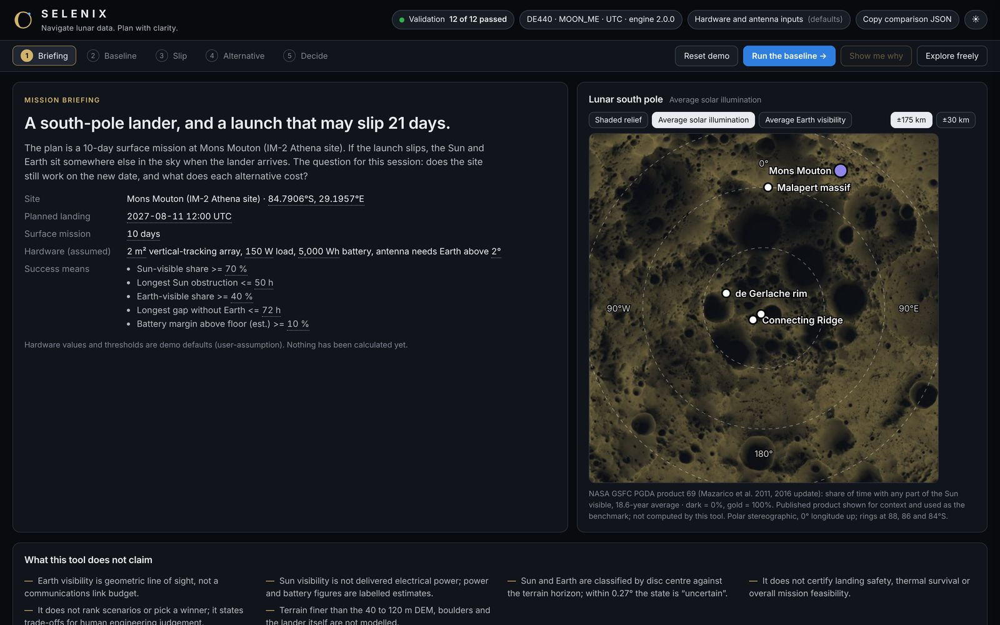
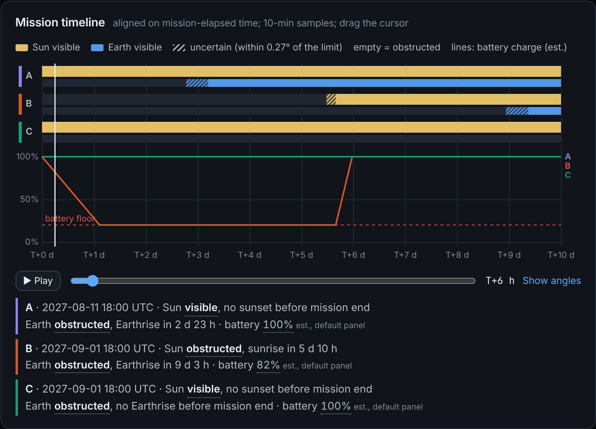
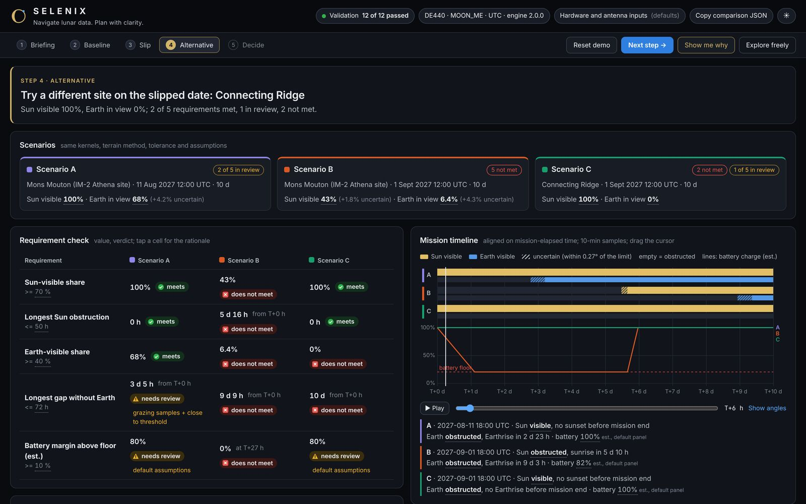
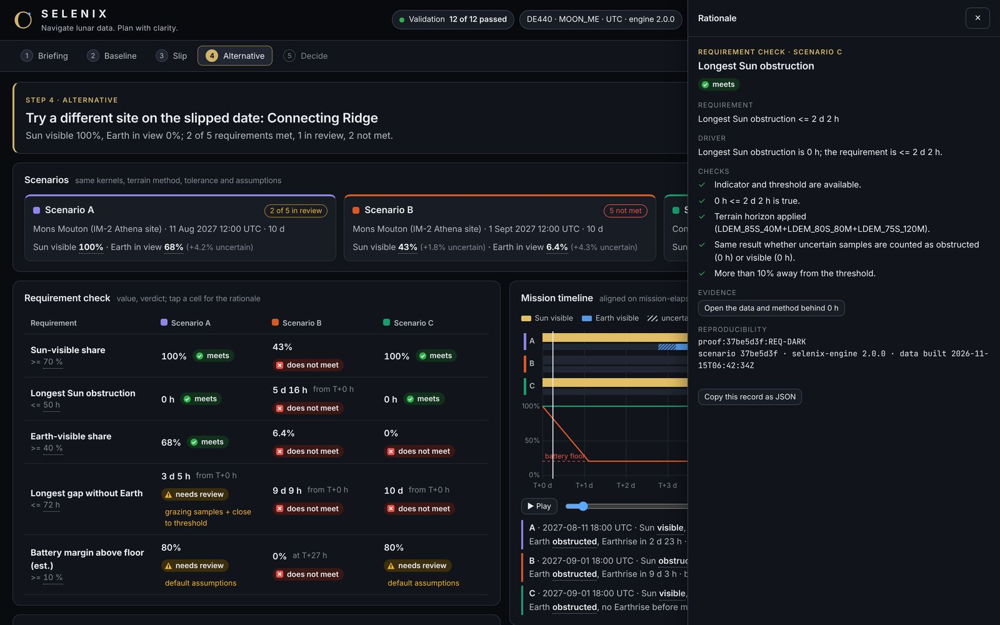

Plan lunar missions with greater clarity.
SELENIX brings lunar site analysis, illumination and Earth-visibility modelling, terrain assessment and mission-timeline evaluation into one engineering-focused planning environment.
Background: average solar illumination at the lunar south pole over 18.6 years, from LRO LOLA topography (NASA GSFC PGDA; Mazarico et al. 2011). Bright ridges are sunlit most of the time; black craters never are.
The data exists. Turning it into a planning answer is the hard part.
Near the lunar south pole the Sun grazes the horizon and Earth sits low. A ridge a few kilometres away can hide either one for days, and a launch slip of three weeks moves both. Planners assemble this today from separate tools for ephemerides, terrain and engineering estimates. SELENIX connects those steps in one workflow.
Where the Sun and Earth are
Apparent Sun and Earth directions from NASA NAIF SPICE kernels (DE440, lunar orientation included), for any supported site and mission window.
Whether terrain blocks them
Horizon profiles derived from LRO LOLA elevation models decide, sample by sample, whether each body is visible, obstructed or too close to call.
What that does to the mission
Visibility windows, longest interruptions and labelled power estimates are checked against the planner's own requirements and logged in plain language.
Built around the questions a planner asks.
| Capability | Mission-planning value |
|---|---|
| Site evaluation | Assess candidate south-pole sites with cited coordinates, LOLA elevation and published long-term illumination for context. |
| Sun visibility | See when the Sun is visible, obstructed or grazing the terrain, how long the longest obstruction lasts and when it starts. |
| Earth visibility | See direct-to-Earth geometric windows above a minimum antenna elevation, and the longest gap without Earth in view. |
| Mission timeline | Align scenarios on mission-elapsed time and step through any instant to see the sky against the terrain horizon. |
| Scenario comparison | Change a landing date or a site and read what changed, in three lines, with the same data and settings for every scenario. |
| Requirement checks | Test each scenario against stated thresholds: meets, needs review, does not meet or unknown, with the reason attached. |
| Power assumptions | Examine panel, load and battery assumptions through a transparent estimate that is always labelled as an estimate. |
| Date sweep | Scan sites against landing dates to find windows worth a closer look. |
| Evidence and traceability | Open any number to see its inputs, kernels, terrain product, method, tolerance, limitations and validation status. |
Start from a site you can cite.
Every curated site carries its source: the IM-2 Athena position from LROC, or the most illuminated points in NASA's published LOLA illumination maps. Terrain horizons are precomputed from LOLA elevation models and load with the site.
- Planetocentric coordinates in the lunar mean-Earth frame, one convention throughout.
- Published 18.6-year illumination and Earth-visibility maps as context layers.
- A site without terrain data is flagged, and its results are reported as upper bounds.


See the mission hour by hour.
Sun and Earth tracks for each scenario sit on one mission-elapsed-time axis. Drag the cursor and the horizon view shows both bodies against the terrain at that instant.
- Three states, not two: visible, obstructed and uncertain when a body is within a stated tolerance of the terrain.
- Worst cases carry their timing: how long, and from when.
- Battery charge appears only as a labelled estimate on explicit assumptions.
The launch slips three weeks. What changes?
Duplicate a scenario, shift the date or move the site, and compare. SELENIX reports what changed, what it did to visibility and which requirement verdicts moved. It states the trade-off and leaves the decision to the team.
- Identical kernels, terrain method, tolerance and assumptions for every scenario.
- “Needs review” says why: terrain missing, close to threshold, grazing samples or default assumptions.
- No ranking and no winner: a better number on one metric is not a better mission.

Every number shows where it came from.
SELENIX integrates established NASA data and methods; it does not replace them. Validation results are part of the product and are displayed in the workspace, including anything that fails.
- Geometry: NAIF SPICE, DE440 ephemeris and lunar orientation, MOON_ME frame, apparent positions, UTC time base.
- Terrain: LRO LOLA polar elevation models at 40, 80 and 120 m; horizon profiles out to 200 km.
- Classification: a documented tolerance separates visible, uncertain and obstructed. Missing terrain is never treated as a clear horizon.
- Quality classes: measured, computed-geometry, engineering-estimate, user-assumption, demo-only, shown on every value.
- Reproducibility: each result keeps its inputs, data versions, settings and a scenario hash.

A five-step planning example, with real calculated values.
The guided demonstration walks through a south-pole lander whose launch slips 21 days: briefing, baseline, slip, alternative site, and the trade-off.
What SELENIX does not claim.
See how a three-week slip changes a south-pole mission.
The platform runs in the browser. Nothing to install.